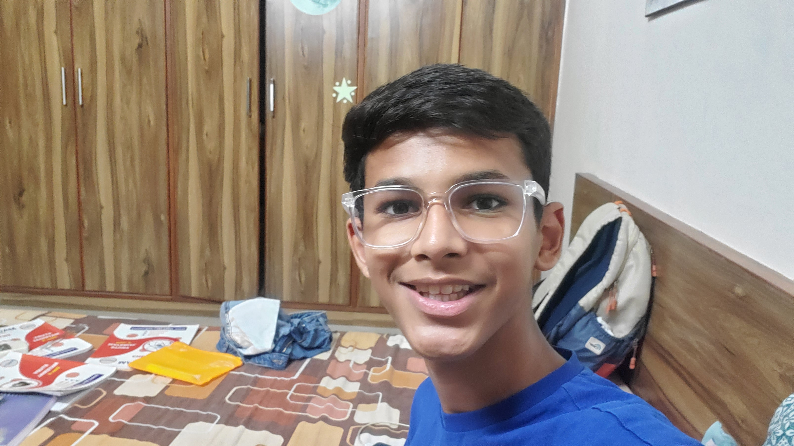

Find your rhythm.
Clean feedback, readable typography, and a typing surface designed to keep the next keystroke obvious.
A focused typing environment built around speed, accuracy, rhythm, and progress — with your practice history staying on your device.
VelocityType is being shaped as a focused practice system rather than a crowded dashboard.
Clean feedback, readable typography, and a typing surface designed to keep the next keystroke obvious.
Turn each session into local, understandable metrics.
No account, no required server, no paid API. The product is designed to work from a static deployment and keep practice data in Local Storage.
Theme, font, cursor, sound, animation, layout, import, export, and reset are part of the planned native settings layer.
The typing loop will be deterministic, responsive, and independently testable.
Completed runs become structured local records that power history and charts.
Accessibility, performance, motion, responsive behavior, and visual detail get their own QA pass.
Start with 15 seconds, find your rhythm, and watch the metrics respond in real time. Every completed run is stored locally on this device.
—
Personal best: —
This dashboard is intentionally local. It reads the sessions created by the typing lab without an account or backend.
Average WPM by day · last 7 days
Complete a few tests to reveal your practice pattern.
Curiosity, creativity, and a passion for building useful things.

I’m a student programmer who loves transforming ideas into practical digital experiences. I enjoy exploring how software works, learning new technologies, and creating projects that solve problems. I’m especially interested in robotics, automation, and the future of technology.
Some of the other things I’ve been working on. Explore the repositories on GitHub for more.
A coding-focused project exploring developer tools and workflows.
View project ↗ 02 / EDUCATIONA study-support project designed to make learning resources easier to access.
View project ↗ 03 / WEATHERA weather-focused web app for viewing conditions and useful updates.
View project ↗ 04 / PRODUCTIVITYA project focused on organizing study time and learning routines.
View project ↗ 05 / SPORTSA football-related project exploring AI-powered experiences.
View project ↗ 06 / WEB APPA practical programming project built around everyday calculations.
View project ↗ 07 / DESIGNA portfolio experiment inspired by dimensional, modern web design.
View project ↗ 08 / WEBSITEA website project focused on presenting a technology brand.
View project ↗